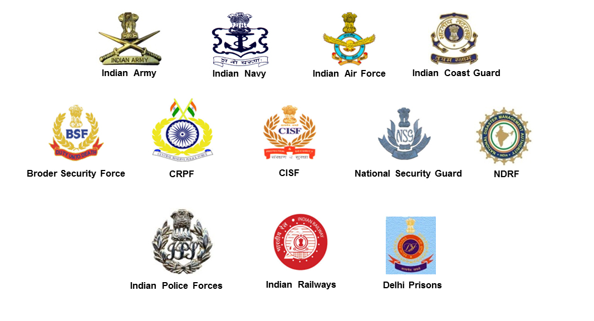

HOME PAGE
This page contain information about indian force, one of the strongest force in world.
INDIAN NAVY

The Indian Navy is the naval branch of the Indian Armed Forces — the other two forces included in safeguarding the country are the Indian Army and the Indian Air Force. The President of India is the Supreme Commander of the Indian Navy, while the Chief of Naval Staff commands the Navy.
The primary objective of the Indian Navy is to protect the country's maritime borders and help in the expansion of its forces. The naval body, whose establishment can be traced back to the 17th century, is bestowed with various responsibilities. From defeating threats to developing indigenous systems and weapons, the Indian Navy operates above, on and under the surface of the ocean to help create a secure maritime environment.
Every year, various job opportunities are made available in the Indian Navy. To be eligible for several Indian Navy jobs, you need mandatory 12+ qualification from any government-recognised board or university. There are two methods for applying — NDA (National Defence Academy) entry and Indian Naval Academy entry.
When is Navy Day celebrated?
Navy Day is celebrated in India on December 4. On the eve of December 4, the Indian Navy organises a Beating Retreat and Tatoo Ceremony at the Gateway of India in Mumbai.
Why is Navy Day celebrated?
Navy Day is celebrated to invoke the memory of the launch of Operation Trident during the Indo-Pak war in 1971. The day is celebrated as a mark of reverence to those who were martyred in the war.
What was Operation Trident?
Operation Trident was conducted in the night intervening December 4 and 5 when the Navy launched an attack on the Pakistan Naval Headquarters in Karachi. India drowned four Pakistani vessels and ravaged the Karachi harbour fuel fields. The operation killed over 500 Pakistani Navy personnel, while the Indian side suffered no losses.
Operation Trident was followed up with another attack by the Indian Navy, code-named Operation Python. Again, India did not suffer any losses in the offensive and managed to damage Pakistani fleet tanker PNS Dacca beyond repair while causing them to lose the Kemari Oil Storage facility as well.
INDIAN ARMY
The Indian Army originated from armies of the East India Company's which at last became the British Indian Army and the Princely States Army, which after the independence in 1947, merged into the National Army of India. The units of the Indian Army have fought many battles in the past where they gained honor for the country with their bravery. One will find out more facts about the Indian Army through this essay on Indian Army in English. The Indian Army has the sole objective of protecting the nation from any foreign aggression that arises, ensuring the nation's security. They also try to prevent the nation from internal threats. During natural calamities, the Indian Army conducts humanitarian rescue operations to save many people's lives. There are a total of 65 regiments in the Indian Army that are divided based on their skills. These are some facts that one can learn from the essay on Indian Army. There are various medals presented by the President of India to different Indian Army recruits for their bravery in the battlefield. The medals awarded for the valour shown on the battlefield in the face of the enemy are Param Vir Chakra, Maha Vir Chakra, and Vir Chakra and the medals awarded for bravery and courage shown away from the battlefield are Ashoka Chakra, Kirti Chakra, and Shaurya Chakra. The Indian Army till now has fought four battles from which three were with Pakistan, and one was with China. Some other operations that are performed by the Indian Army are Operation Vijay, Operation Meghdoot, Operation Cactus, and Operation Brasstacks. One can also learn about some more missions conducted by the Army from this essay on Indian Army as they were also involved in many peacekeeping missions organized by the United States. Some of these peacekeeping missions were conducted in Lebanon, Angola, Cambodia, Vietnam, and many other countries. The Government is now planning to increase the capabilities of the Indian Force by introducing some new policies. Recently, it has been planned that the Indian Army with the Indian Navy will set up a marine brigade. The current formations that the Army follows are holding formations and combat formations. Holding formations are meant for holding and containing the enemies, and combat formation is meant for counter-attacking the enemies in order to neutralize them and stop them from attacking. One can gain knowledge of the Army's uniform from this Indian Army essay. The Indian Army camouflage uniform includes a shirt, trouser, and a synthetic material cap. The Indian Army's camouflage dress has a jungle camouflage pattern that is designed to be used in woodland environments. Regiments which are posted in the desert or dusty area have desert camouflage pattern uniforms. The modern recruited armies are required to wear distinctive parade uniforms which are classified by variegated turbans and waist-sashes in regimental colors. Indian Army gives the perfect example of gender inequality by recruiting women in different regiments of the Army. The first women were appointed in the Indian Army when the Indian Military Nursing Service was formed in the year 1888. These woman nurses have served the Army in both World War I and II. With all the facts relating to the Indian Army covered in this essay, one can understand the importance of Indian Army essay. The essay about Indian Army gave an overview of the Army as a whole. The Indian Army being the third-largest in the globe, has many features that one can see from this essay. It is also visible how the government has planned to make the Army better every passing day so that they are ready to face any danger, be it internal or external.
INDIAN AIR FORCE

Indian Air Force Day is celebrated on October 8 every year. Every year, the Air Force Day is celebrated at Hindon base in presence of IAF chief and senior officials of the three armed forces. These celebrations include an air display where the most crucial and vintage aircraft put up a magnificent show.
Indian Air Force
The Indian Air Force (IAF) is the air arm of the Indian armed forces with the primary mission to secure Indian airspace and conduct aerial activities during armed conflicts. More than 170,000 personnel are in service with the Indian Air Force. Its personnel and aircraft assets rank fourth amongst the air forces of the world.
Also known as ‘Bharatiya Vayu Sena’, the IAF was officially established on October 8, 1932, by the British Empire. The President of India holds the rank of Supreme Commander of the air force. The Chief of Air Staff, an air chief marshal is responsible for the operational command of the air force.
The Indian Air Force not only safeguards Indian territory and national interests from all threats, but also provides support during natural calamities. The IAF provides air support to the Indian Army on the battlefield as well as strategic and tactical airlift capabilities.
The Indian Air Force comprises highly-trained crews and pilots and has access to modern military resources which provide India with the capacity to carry out rapid response evacuation, search-and-rescue (SAR) operations, and delivery of relief supplies to affected areas through cargo aircraft.
The air force is divided into five operational and two functional commands. Each command is supervised by an Air Officer Commanding-in-Chief with the rank of Air Marshal. The purpose of an operational command is to conduct military operations using aircraft within its area of responsibility, and functional command’s responsibility is to maintain combat readiness.
Facts about IAF
IAF ranks as the fourth largest operational air force in the world of the Indian Air Force is ‘Touch the Sky with Glory’ and it was taken from eleventh chapter of the Bhagavad Gita.
The air force employs about 170,000 personnel and over 1,400 aircraft.
After independence, the air force took part in four wars with Pakistan and one with People’s Republic of China.
IAF works with the United Nations’ peacekeeping missions.
IAF took part in relief operations during natural calamities such as Gujarat cyclone in 1998, the tsunami in 2004, and floods in North India. The IAF has also been part of relief missions such as Operation Rainbow in Sri Lanka